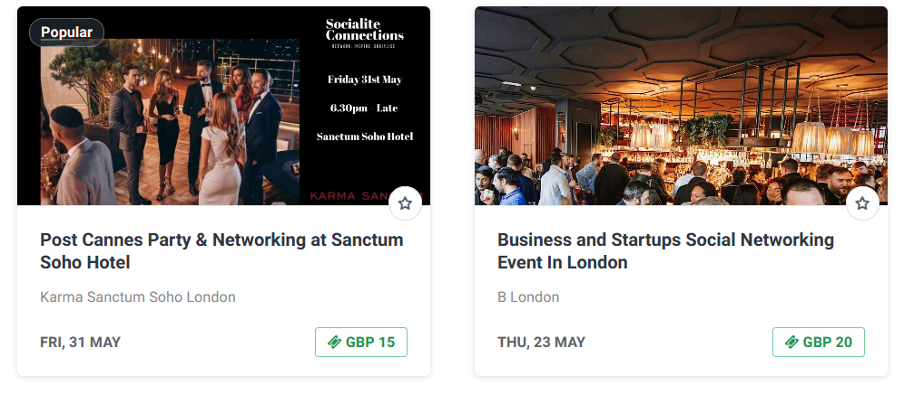
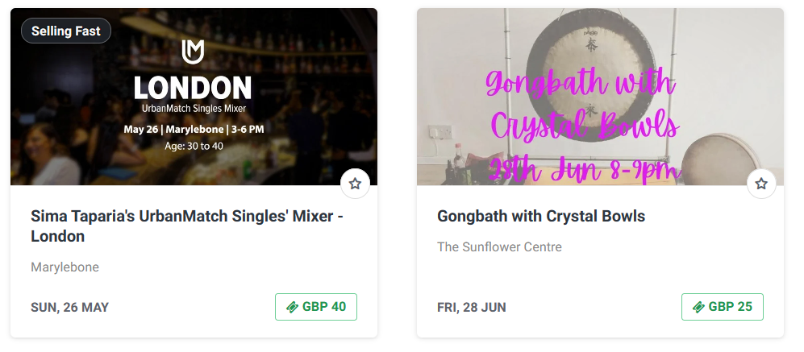
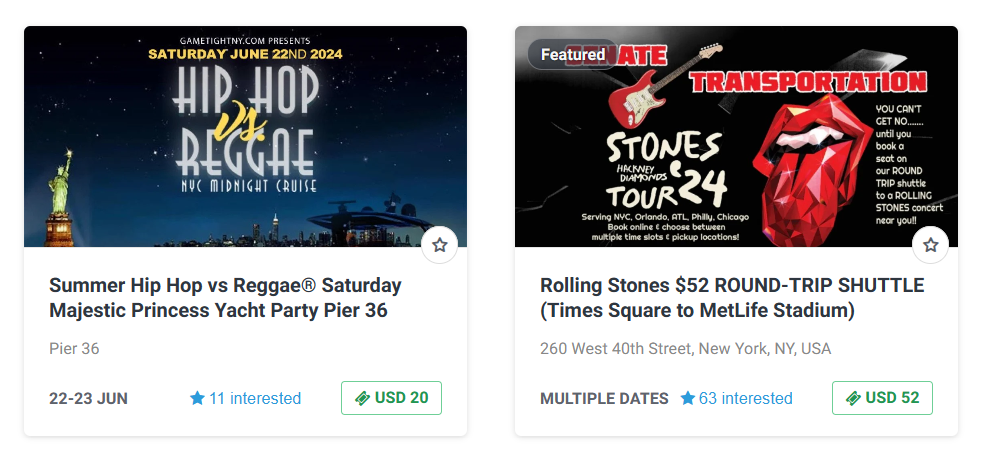
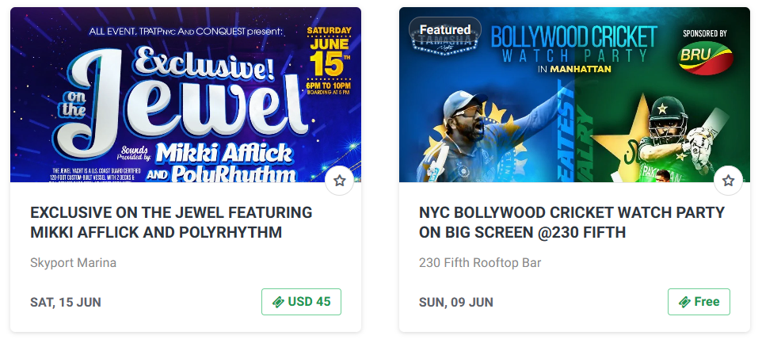
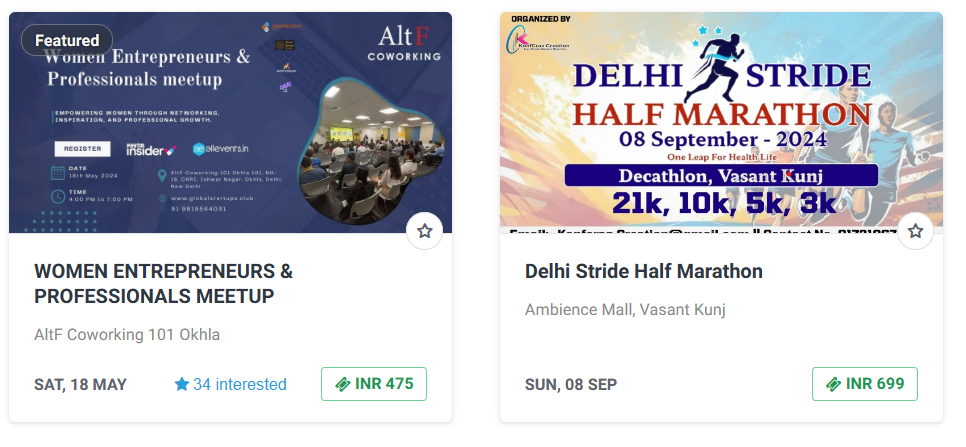
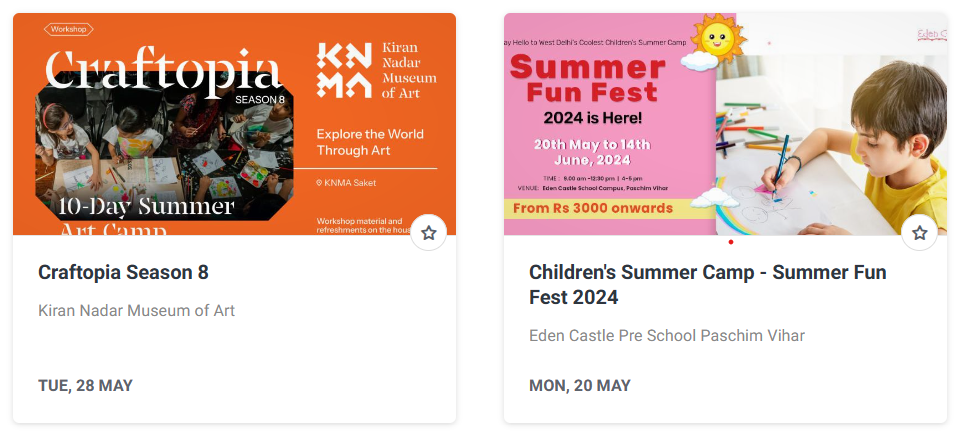
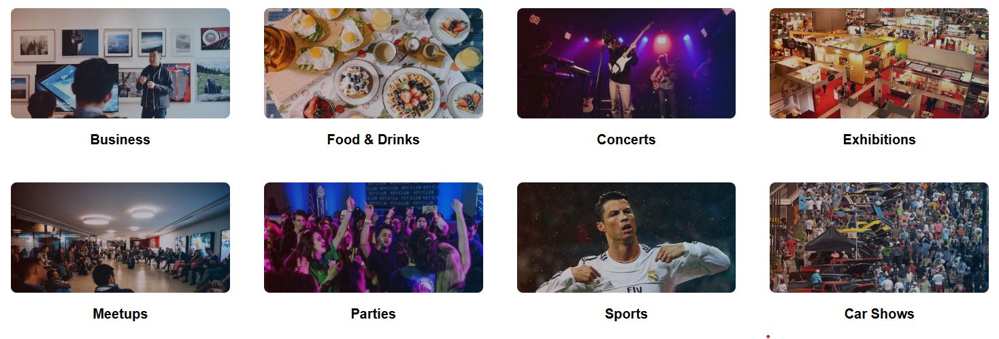
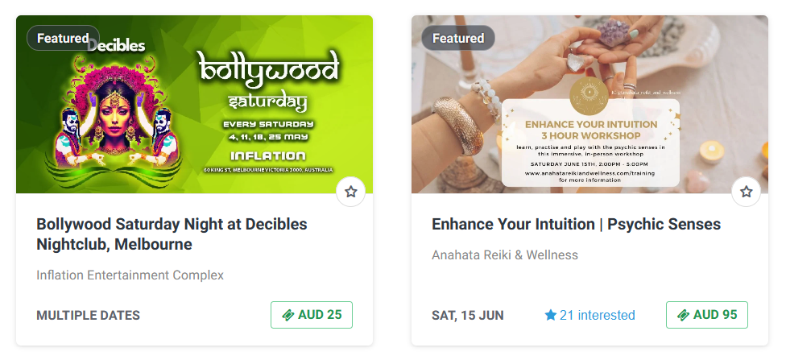
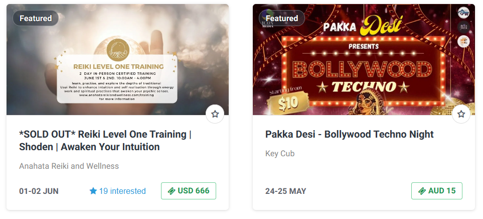

Art, history, and ethnic diversity all come together at events in London. The calendar is dotted with sporting events, dazzling exhibitions, and breathtaking fireworks. The Big Smoke thrives on its long-lived historic landmarks like the Tower of London and Buckingham Palace amidst the contemporary modern structures! The Theatre Capital spreads a charming aura into its people.
Things to do in London
London has a vibrant events calendar throughout the year. Here are some highlights for 2024:
Month of January:
New Year’s Day Parade: A spectacular parade with performers from around the world marching through central London.
Christmas at Kew: Explore Kew Gardens illuminated with thousands of twinkling lights.
Hogwarts in the Snow: Visit Warner Bros. Studio Tour London to see Harry Potter film sets transformed for winter.
Burns Night: Celebrate Scottish poet Robert Burns with traditional dinners and whisky toasts1.


Month of February:
Chinese New Year: Join the largest celebration outside Asia, including a parade and festival in Trafalgar Square.
February Half-Term: Enjoy family-friendly activities and interactive museum visits
Things to do in London
New York City is always bustling with exciting events. Here are some happening right now:
1.$10 Second Sundays at Fotografiska New York: Enjoy reduced-price museum admission every second Sunday of the month at Fotografiska New York. Explore art, sip wine, and immerse yourself in culture.
2.Daniel Arsham: PHASES Exhibition: Visit Fotografiska New York to see the first-ever exhibition dedicated to artist Daniel Arsham’s photography practice. Arsham, known for his sculptures and design collaborations, showcases his photographic work.


3.Human / Nature: Encountering Ourselves in the Natural World: This exhibition at Fotografiska New York features global perspectives on Earth’s complex relationship with its human inhabitants. Through photographs, video installations, and sculptures, 14 international artists provoke reflection.
4.Brown Sugar Comedy Show: Head to Shrine Bar for a night of laughter with talented comedians from the US and Canada. Hosted by Ishmael J Gaynor, this show promises amazing jokes and good vibes.
5.NYC Mother’s Day Hip Hop vs. Caribbean Jewel Yacht Party Cruise: Celebrate Mother’s Day on a yacht cruise with hip-hop and Caribbean vibes. Join the party on the Hudson River at Skyport Marina Jewel Yacht.
6."My True Love!”: Catch this wildly comedic and sharp-witted fairytale that breaks down stereotypes of love at The Players Theatre.
Delhi is the capital of India, so it's obvious the heart and soul of the country lies right here! The festivals and events in Delhi are unmatched. Monthly food festivals, marathons, workshops, arts and crafts events, and extravagant exhibitions are just some examples! Street art at Lodhi Art District, shopping at the budget-friendly Sarojini Market, or iconic food carts at Chandi Chowk, there are endless things to do in Delhi. Explore the unknown streets of Delhi with us.
Delhi, the vibrant capital of India, hosts a plethora of exciting events across various domains. Here are some upcoming events in Delhi that you might find interesting:
1.Franchise India (FI24): The 20th edition of the World’s Largest International Franchise & Retail Show will take place at the India International Convention And Expo Center in New Delhi. It’s an excellent opportunity for business enthusiasts interested in franchising and retailing.
2.Educatus Expo Delhi: Shaping the Future of Young Minds, this event focuses on education and training. It’s happening at Pragati Maidan in New Delhi.
3.India Med Expo (IME): This exhibition at the INDIA EXPO CENTRE & MART in Greater Noida (near Delhi) showcases medical, surgical instruments, hospital equipment, and consumables.


4.Conference on Solar Power in India: Discuss recent trends and developments in the solar sector at Le Meridien New Delhi. Share experiences from successful projects and deliberate on the next steps to address solar energy challenges.
5.Snack & BakeTec: A global trade fair for snacks, bakery, and confectionery processing and packaging technology. The latest edition will emphasize crucial technologies to optimize production.
6.Ayush Shala Expo: India’s Only Wide-Ranging Health And Wellness Expo, happening alongside other events at the INDIA EXPO CENTRE & MART in Greater Noida.
7.Biodegradable Expo: A three-day trade exhibition focusing on biodegradable and sustainable products, machinery, raw materials, and allied industries
Things to do in Melbourne
Australia, is a vibrant city with a rich cultural scene and plenty of exciting events. Here are some happening right now:
1.Monopoly Dreams: Immerse yourself in a fully interactive Monopoly experience, complete with games and challenges.
2.Queen Victoria Market: Explore the largest open-air market in the southern hemisphere. It’s a beloved Melbourne landmark with a wide variety of offerings.
3.Kensington Market: Discover an eclectic mix of designer fashion, culinary treats, ceramics, homewares, and visual art.


4.Melbourne Book Market: Browse through over 5,000 new and pre-loved titles at this curated book market.
5.The Big Design Market: Almost Winter: Enjoy a showcase of over 200 independent Australian designers, along with delicious food and wine.
6.Donut Festival: Melbourne’s favorite Donut Festival returns to Queen Victoria Market.
7.Gardening 4 Kids: During the spring school holidays, join a fun-filled gardening experience with Gardening 4 Kids